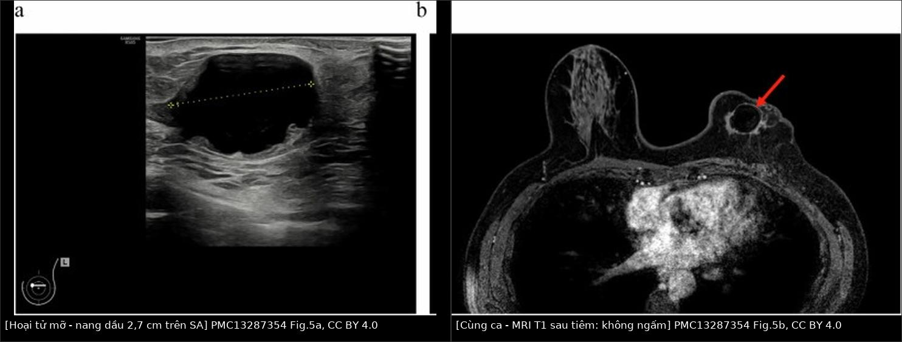
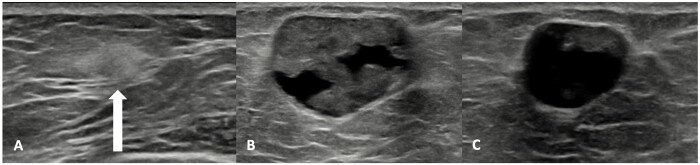
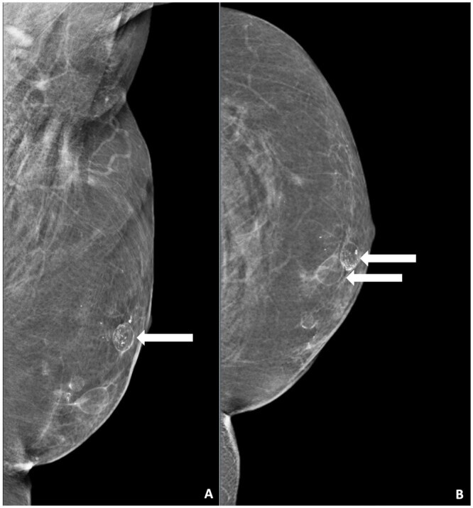
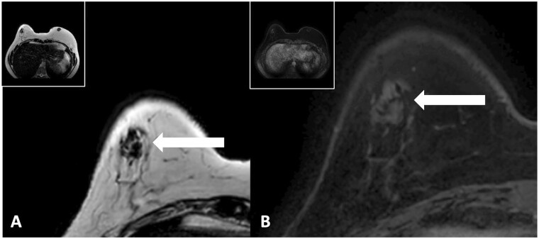
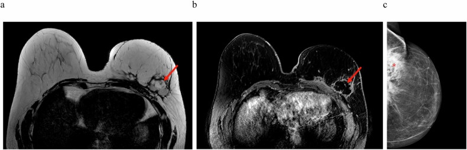

1687 — Hoại tử mỡ sau tái tạo vú, vạt và ghép mỡ / Fat necrosis after breast reconstruction, flap and fat grafting
Tags: pattern:hoai-tu-mo pattern:nang-dau pattern:voi-hoa-vien vung:vu protocol:sieu-am-vu protocol:nhu-anh-phong-dai protocol:MRI-vu score:BI-RADS incidentaloma:hoai-tu-mo
Mức chắc chắn (certainty): tổng hợp y văn (literature synthesis) — dựa trên 1 tổng quan hệ thống 17 nghiên cứu về đặc điểm hình ảnh hoại tử mỡ sau các kỹ thuật tái tạo tự thân (Smeins NNPM và cs, Insights Imaging 2026, PMC13287354, CC BY 4.0), 1 bài tổng quan hình ảnh sau tái tạo toàn bộ bằng ghép mỡ (Rijkx MEP và cs, BJR Open 2024, PMC11128096, CC BY 4.0), và 1 đoàn hệ 10 năm về diễn tiến tự nhiên (Lee J và cs, BMC Cancer 2021, PMC7885495, CC BY 4.0).
1. Tổng quan — vì sao mỡ chết đi lại tạo ra "nang dầu" và vôi hóa viền
- Bệnh học: hoại tử mỡ (fat necrosis) là viêm vô khuẩn của tế bào mỡ sau thiếu máu cục bộ (vạt cuống hẹp, ghép mỡ thể tích lớn, xạ trị, chấn thương, sinh thiết). Tế bào mỡ vỡ → giải phóng triglyceride → phản ứng viêm + đại thực bào → bao xơ bao quanh khối mỡ lỏng = nang dầu (oil cyst); canxi xà phòng hóa lắng ở vỏ xơ = vôi hóa viền/cuống (rim, coarse).
- Ba giai đoạn (theo Rijkx 2024): tăng cấp (hyperacute) — phù, tăng hồi âm lan tỏa; viêm (inflammatory) — nang dầu hình thành, vỏ xơ mỏng; xơ hóa (fibrotic) — vỏ dày, có thể co kéo/gai, vôi hóa viền.
- TẠI SAO mỡ "sáng" trên T1–T2 và "tối" trên T1 fat-sat: mỡ là mô có thời gian T1 ngắn, T2 dài; xung ức chế mỡ đặt tần số mỡ về 0 → khối mỡ mất tín hiệu, trong khi vỏ xơ (collagen, ít proton tự do) vẫn tối trên T2 và ngấm thuốc ở thì muộn. Vì vậy nang dầu điển hình = lõi tối trên T1 fat-sat + viền sáng mỏng + không ngấm trung tâm.
- TẠI SAO siêu âm đổi hình dạng theo thời gian: giai đoạn sớm mô phù → tăng hồi âm, bờ mờ; khi hóa lỏng → vùng trống âm, tăng hồi âm phía sau; khi xơ hóa → bờ dày, có bóng lưng — chính là lúc dễ bắt chước ung thư tái phát.
- TẠI SAO chẩn đoán khó sau tái tạo: vạt tự thân không có giải phẫu tuyến bình thường, mô mỡ hoại tử nằm ngay vùng tiếp giáp vạt–thành ngực — cũng là nơi tái phát hay xuất hiện; và vôi hóa hoại tử mỡ có thể là cụm đa hình trông y như DCIS.
- Số liệu nằm lòng:
- Tỉ lệ hoại tử mỡ: 12,5–23,6% sau vạt (4 nghiên cứu); 7,3–82,9% sau ghép mỡ tự thân (AFT) (PMC13287354). Đoàn hệ có xác nhận mô học: 11,6% (42/362) sau tái tạo vú; TRAM cuống 57,2% so với vạt vi phẫu 9,5% (PMC7885495).
- Kích thước: vạt 0,3 đến > 3 cm; AFT 5–46 mm (PMC13287354).
- Thời điểm: phát hiện trung bình 21,1 ± 17,2 tháng sau mổ, kích thước trung bình 2,5 ± 1,5 cm (PMC7885495); nang dầu hình thành trong 391 ngày, vôi hóa trong 491 ngày; vôi hóa có thể xuất hiện sớm nhất 11 tháng; vôi hóa thô–dạng đường 2–3 năm sau mổ, grade 1 ≈ 30 tháng → grade 3 ≈ 65 tháng (PMC13287354).
- Diễn tiến tự nhiên: tan trung bình 45,9 ± 42,1 tháng; 61,9% gần như tan hoàn toàn (< 5 mm) sau 10 năm; hơn nửa tan trong 2–3 năm (PMC7885495).
- Một lần ghép mỡ có thể tích tới ~250 mL mỗi vị trí → thể tích càng lớn, nguy cơ hoại tử mỡ càng cao (PMC11128096).
- Nguy cơ bỏ sót tái phát: trong 6 ca tái phát của một nghiên cứu, 1 ca được gọi là "hoại tử mỡ" trên siêu âm trước đó (PMC13287354 dẫn Fracol). Vôi hóa cụm đa hình tới 9 mm xuất hiện 12 tháng sau lần ghép mỡ cuối đã bị chấm BI-RADS 4 (PMC11128096).
- Giá trị của "không ngấm thuốc": khối không có mạch tại đúng vị trí ghép mỡ có giá trị tiên đoán âm 100% cho ác tính (Parikh, dẫn trong PMC11128096) → có thể BI-RADS 2; trên MRI, không ngấm thuốc trung tâm cho phép bỏ sinh thiết (PMC11128096).
2. Mẫu hình + chẩn đoán phân biệt theo vị trí (Gamut)
- Mẫu hình cốt lõi (nhớ "OIL"):
- Oil cyst — khối tròn/bầu dục, đồng âm với mỡ, vỏ mỏng; nhũ ảnh: vùng sáng (radiolucent) có viền mảnh; MRI: tối trên T1 fat-sat, viền sáng.
- Imaging stable / benign calcification — vôi hóa thô, cuống, viền ("shell"), nhiều ổ, đối xứng, kèm nang dầu.
- Lack of enhancement — không ngấm thuốc trung tâm trên MRI, không có mạch trên Doppler.
- Gamut theo vị trí/bối cảnh:
- Vạt tự thân (DIEP/TRAM/PAP): hoại tử mỡ ở phần ngoại vi vạt và vùng tiếp giáp với diện cắt tuyến — trùng vị trí tái phát → không được loại trừ chỉ vì "đúng chỗ hay gặp hoại tử mỡ".
- Ghép mỡ (AFT) toàn bộ hoặc làm đầy khuyết: tổn thương ở mọi lớp (dưới da, tuyến, dưới tuyến, trước/trong cơ ngực), nhiều ổ, có thể lan vào cơ ngực (mỡ trong cơ ngực là lành tính).
- Sau bảo tồn + xạ trị: hoại tử mỡ 4–25%, thường kèm co kéo da và vôi hóa; phân biệt với tái phát tại giường u.
- Sau sinh thiết/mổ: hoại tử mỡ dạng khối có gai ở đường vào kim — bẫy kinh điển của "khối mới sau sinh thiết".
- Trong hạch/ngoài vú: hiếm — hoại tử mỡ trong hạch nách, hoặc mỡ lạc chỗ; đừng nhầm với hạch di căn hoại tử.
3. Bảng so sánh phân biệt (ma trận đối chiếu)
| Thực thể (entity) | Hình ảnh điển hình (MG/US/MRI) | Chốt vào (rule-in) | Chốt loại (rule-out) | Gợi ý xác nhận |
|---|---|---|---|---|
| Hoại tử mỡ / nang dầu | MG: vùng sáng + viền mảnh, vôi hóa thô/viền; US: khối đồng âm mỡ, không mạch, vỏ mỏng hoặc dày; MRI: tối T1 fat-sat, không ngấm | Đúng vị trí ghép/vạt + không mạch + vôi hóa điển hình + ổn định/teo dần | Bờ gai dày không đều + ngấm thuốc kiểu khối + vôi hóa đa hình phân nhánh → không loại trừ tái phát | So phim cũ; MRI; core biopsy nếu còn nghi |
| Tái phát ung thư vú | Khối giảm hồi âm, bờ gai, ngấm thuốc nhanh–thoát (Type III), DWI hạn chế; vôi hóa đa hình/phân nhánh | Khối mới/to lên, ngấm thuốc, ADC thấp, vôi hóa đa hình | Lõi tối T1 fat-sat + không ngấm + vôi hóa thô/viền → ít khả năng | Core biopsy có clip; đối chiếu xạ trị trường chiếu |
| Seroma | US: trống âm, không vỏ đặc; MRI: rất sáng T2, tối T1, không ngấm; xuất hiện tuần đầu sau mổ | Xuất hiện sớm (< 1 tuần), trống âm, không vỏ xơ | Vỏ dày + hồi âm trong lòng + vôi hóa → không phải seroma đơn thuần | Siêu âm lại sau 1 tuần; chọc hút vô khuẩn |
| Máu tụ | US: hồi âm hỗn hợp, có mức; MRI: tín hiệu máu theo thì (T1 sáng bán cấp) | Sau chấn thương/mổ gần, có mức dịch–máu, không mạch | Tối T1 fat-sat + đồng âm mỡ → mỡ, không phải máu | Theo dõi 4–6 tuần; MRI nếu không tan |
| Áp-xe | US: dịch đặc, vỏ dày, tăng sinh mạch quanh; MRI: DWI sáng/ADC tối trong lòng | Sốt, đau, đỏ, CRP tăng; hạn chế khuếch tán trong lòng | Không sống, không hạn chế khuếch tán, không mạch | Chọc hút/cấy; dẫn lưu |
| Galactocele | Khối đồng âm mỡ sữa, có mức; thường sau sinh/cho con bú | Bối cảnh tiết sữa, mức dịch–mỡ, không mạch | Vôi hóa viền dày + tiền sử ghép mỡ → hoại tử mỡ | Chọc hút (sữa); theo dõi |
| Siliconoma | US: tăng hồi âm + suy giảm chùm tia ("bão tuyết"); MRI: sáng trên chuỗi silicone | Tiền sử implant/rách vỏ, snowstorm | Đồng âm mỡ, tối T1 fat-sat → mỡ, không phải silicone | Xem bài 1686 |

Trái: siêu âm — nang dầu 2,7 cm, lòng trống âm, vỏ mỏng, đo đường kính. Phải: MRI T1 sau tiêm cùng ca — khối không ngấm thuốc, viền sáng mảnh. Nguồn: Smeins NNPM và cs, Insights Imaging 2026, PMC13287354 Fig. 5a + 5b, CC BY 4.0. Ảnh ghép letterbox.Ba câu hỏi quyết định "theo dõi hay sinh thiết"
- Có đúng vị trí và đúng "tuổi" không? Nang dầu/vôi hóa viền trong 6–36 tháng đầu sau ghép/vạt là điển hình.
- Có mạch/ngấm thuốc không? Không mạch + không ngấm trung tâm = lành tính mạnh (NPV 100% theo Parikh).
- Vôi hóa thuộc loại nào? Thô, cuống, viền, nhiều ổ = lành; đa hình, phân nhánh, cụm = BI-RADS 4/5 → sinh thiết.
4. Protocol chụp + theo dõi
- Bước 1 — nhũ ảnh + siêu âm cho mọi khối sờ thấy sau tái tạo (MRI chỉ là "problem-solving"). Nhũ ảnh phải so phim trước ghép/vạt; ghi rõ vị trí tương quan với vạt và diện cắt.
- Siêu âm: đánh giá có mạch/không mạch bằng Doppler màu, vỏ dày hay mỏng, có thành phần đặc bên trong; khối không mạch tại đúng vị trí ghép được coi là lành tính (BI-RADS 2).
- MRI vú khi: nhũ ảnh/SA không kết luận, khối nằm sâu cạnh implant/vạt, hoặc cần phân biệt tái phát. Bắt buộc có T1 fat-sat trước–sau tiêm + DWI/ADC; đọc theo BI-RADS MRI (hình thái, đường cong động học).
- Theo dõi sau khi đã xác nhận mô học: chỉ cần theo dõi hình ảnh; hơn nửa tan trong 2–3 năm, trung bình 45,9 tháng, 61,9% < 5 mm sau 10 năm (PMC7885495). Lịch gợi ý: 6 tháng/lần trong 2 năm đầu, sau đó 1 năm/lần (theo lịch theo dõi ung thư vú của đoàn hệ trên).
flowchart TD
A[Khối mới sau tái tạo vạt/ghép mỡ] --> B{Nhũ ảnh + siêu âm: nang dầu điển hình, không mạch?}
B -->|Có| C{Vôi hóa thô/viền và không có thành phần đặc?}
C -->|Có| D[BI-RADS 2 - theo dõi 6-12 tháng]
C -->|Không| E[BI-RADS 3 - MRI hoặc theo dõi ngắn 3-6 tháng]
B -->|Không| F{MRI: ngấm thuốc trung tâm hoặc DWI hạn chế?}
F -->|Không| D
F -->|Có| G[BI-RADS 4/5 - core biopsy có clip]
G -->|Hoại tử mỡ| D
G -->|Tái phát| H[Chuyển ung thư - đánh giá lan rộng]
- Ngưỡng BI-RADS áp dụng: vôi hóa thô/viền = BI-RADS 2; cụm đa hình/ phân nhánh = BI-RADS 4–5; khối có bờ gai + ngấm thuốc = tối thiểu BI-RADS 4.
5. Biến thể bình thường và cạm bẫy
- "Gai" của hoại tử mỡ giai đoạn xơ hóa: vỏ xơ dày co kéo tạo bờ gai sau ≥ 1,5 năm — trên nhũ ảnh trông như ung thư; chốt bằng MRI không ngấm hoặc so phim cũ.
- Vôi hóa cụm đa hình sau ghép mỡ: có thể tới 9 mm, xuất hiện 12 tháng sau lần ghép cuối → không được gọi là "vôi hóa lành" chỉ vì có tiền sử ghép mỡ.
- Vị trí "hay gặp hoại tử mỡ" chính là vị trí tái phát: vùng tiếp giáp vạt–diện cắt và ngoại vi vạt; không loại trừ tái phát bằng vị trí.
- Mỡ trong cơ ngực sau ghép: mỡ lạc chỗ trong cơ ngực là lành tính, đừng gọi là xâm lấn cơ; phân biệt bằng T1 fat-sat (mất tín hiệu) và không ngấm.
- Seroma mạn > 4 tuần: không đáp ứng chọc hút/đốt xơ → MRI để loại trừ tái phát/hoại tử mỡ có thành phần đặc; seroma đơn thuần rất sáng T2, tối T1, không ngấm.
- Chụp MRI sau ghép mỡ trong vòng vài tuần: phù và viêm làm tăng tín hiệu T2 và ngấm viền → dễ chấm BI-RADS 4 oan; nên chờ ≥ 3 tháng nếu không cấp.
- Bỏ sót "satisfaction of search": thấy nang dầu điển hình rồi dừng, không đọc phần vạt còn lại và hạch nách.
6. Tự lượng giá — Blind Quiz
Ca 1 — ba giai đoạn của hoại tử mỡ

- Gợi ý: nữ 46 tuổi, tái tạo toàn bộ vú trái bằng ghép mỡ 1 năm trước, khám vì một vùng cứng.
- Câu hỏi: Xếp A–B–C theo thứ tự thời gian? Dấu hiệu nào cho biết đã hình thành nang dầu?
Bấm để hiện đáp án
- Dấu hiệu: A — vùng tăng hồi âm lan tỏa (giai đoạn tăng cấp); B — bắt đầu hóa lỏng, vỏ xơ phía trước (giai đoạn viêm); C — nang dầu gần hoàn chỉnh, lòng trống âm, vỏ mỏng.
- Chẩn đoán: hoại tử mỡ tiến triển theo 3 giai đoạn; không cần sinh thiết khi điển hình.
- Nguồn: Rijkx MEP và cs, BJR Open 2024, PMC11128096 Fig. 3A–C, CC BY 4.0.
Ca 2 — vôi hóa viền quanh nang dầu

- Gợi ý: cùng bệnh nhân, 2 năm 10 tháng sau lần ghép mỡ cuối; khối cứng vùng sau núm.
- Câu hỏi: Mô tả hai nang dầu và kiểu vôi hóa? Chấm BI-RADS?
Bấm để hiện đáp án
- Dấu hiệu: khối sáng đồng mỡ có viền đậm mảnh (mũi tên), kèm vôi hóa viền/thô; hai nang dầu ở vùng sau núm (A: MLO, B: CC).
- Chấm: BI-RADS 2 — vôi hóa viền/thô + nang dầu điển hình.
- Nguồn: Rijkx MEP và cs, BJR Open 2024, PMC11128096 Fig. 4A–B, CC BY 4.0.
Ca 3 — MRI: khối tối T2, không ngấm

- Gợi ý: cùng bệnh nhân; MRI 2 năm 10 tháng sau ghép mỡ, đánh giá khối góc trên ngoài vú phải.
- Câu hỏi: Tín hiệu T2 và đặc điểm ngấm thuốc nói gì? Có cần sinh thiết?
Bấm để hiện đáp án
- Dấu hiệu: khối tối trên T2 (A), không ngấm thuốc sau tiêm (B) — tương ứng vỏ xơ + mỡ hoại tử.
- Kết luận: hoại tử mỡ; không ngấm trung tâm cho phép bỏ sinh thiết (BI-RADS 2), theo dõi.
- Nguồn: Rijkx MEP và cs, BJR Open 2024, PMC11128096 Fig. 5A–B, CC BY 4.0.
Ca 4 — hoại tử mỡ sau vạt DIEP

- Gợi ý: nữ 67 tuổi, cắt tuyến vì DCIS, tái tạo bằng vạt DIEP; 8 tháng sau sờ thấy khối góc dưới ngoài.
- Câu hỏi: Khối 4,2 cm có đặc điểm gì trên MRI? Vì sao vẫn chấm BI-RADS 2 dù kích thước lớn?
Bấm để hiện đáp án
- Dấu hiệu: khối thùy múi 4,2 cm, mô quanh ngấm nhẹ, bờ "gương" (specular); nhũ ảnh có vôi hóa thô cùng vùng.
- Vì sao BI-RADS 2: hình thái điển hình hoại tử mỡ + vôi hóa thô + không có đặc điểm ác tính; kích thước không quyết định BI-RADS.
- Nguồn: Smeins NNPM và cs, Insights Imaging 2026, PMC13287354 Fig. 3a–c, CC BY 4.0.
Ca 5 (ảnh ghép) — nang dầu "không ngấm" trên MRI
- Gợi ý: nữ 61 tuổi, tái tạo toàn bộ vú trái bằng ghép mỡ, khối sờ thấy 21 tháng sau lần ghép thứ 4.
- Câu hỏi: Hai đặc điểm nào trên hai phương thức khẳng định đây là nang dầu?
Bấm để hiện đáp án
- Dấu hiệu: siêu âm — nang 2,7 cm, lòng trống âm, vỏ mỏng, không có thành phần đặc; MRI — khối không ngấm, viền sáng mảnh.
- Kết luận: nang dầu (hoại tử mỡ), BI-RADS 2.
- Nguồn: Smeins NNPM và cs, Insights Imaging 2026, PMC13287354 Fig. 5a–b, CC BY 4.0.
Bài liên quan chéo
- 1656 – Rách vỏ implant & gel bleed
- 1686 – Hạch nách chứa silicone & siliconoma
- 1653 – Co rút bao xơ implant & xơ hóa cơ ngực lớn
- 516 – Hình ảnh vú sau điều trị
- 510 – BI-RADS: nhũ ảnh, siêu âm, MRI
Không dùng để chẩn đoán độc lập khi chưa có người hướng dẫn.